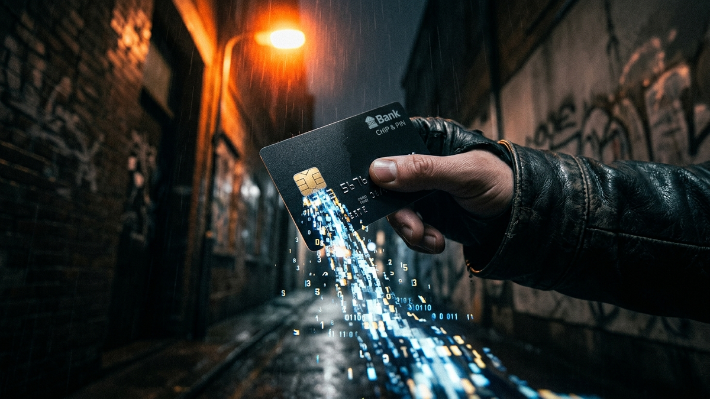

Alright, let's get one thing straight. When you hear "credit card skimming," you probably picture some shady, hoodie-wearing character sticking a clunky device on a gas pump in the middle of the night. That's a dangerously outdated image. By 2026, that stereotype is about as relevant as a floppy disk. The game has changed, and the criminals are winning because most people are still fighting yesterday's war. I've spent 15 years cleaning up the digital messes these crews leave behind, and I can tell you this: skimming has evolved into a silent, sophisticated, and terrifyingly efficient form of theft.
The new criminals are "digital pickpockets." They don't need to physically touch you or even retrieve their hardware anymore. They can be sitting in a car across the street, sipping coffee while their devices slurp up card data via Bluetooth. They can be a thousand miles away, having slipped a few lines of malicious code onto that small online boutique you love. They are exploiting the very convenience we demand—tap-to-pay, online shopping, self-checkout—and turning it into a weapon against us.
This guide is your wake-up call. I'm not here to scare you with vague warnings; I'm here to arm you. We're going to pull back the curtain on their exact methods, from the high-tech hardware they use at the ATM to the invisible software traps they lay online. Forget the generic advice. This is a practical, no-nonsense playbook from someone who has seen the damage firsthand. Buckle up.
The physical skimmer is far from dead; it just went to engineering school. The bulky, obvious overlays of the past have been replaced by miniaturized, hyper-specialized tools that are nearly impossible to spot if you don't know exactly what you're looking for. The goal of these devices is the same: capture the data from your card's magnetic stripe (Track 1 and Track 2 data) and, if possible, your PIN. The methods, however, are straight out of a spy movie.
First, let's talk about the "Shimmer." This is the scariest evolution in point-of-sale skimming. For years, we told people, "Use the chip! It's safer!" And it was. The EMV chip creates a unique, one-time transaction code, making a simple data grab useless. Criminals adapted. A shimmer is a paper-thin, flexible circuit board that slides deep inside the chip reader slot. When you insert your card, it sits between your chip and the machine's legitimate reader, intercepting the communication. While it can't clone the one-time code, it can capture enough data to perform other types of fraud or combine it with other stolen information to create a more complete victim profile. They are physically impossible to see from the outside.
Next up are the Bluetooth-enabled skimmers. This is where the game really changed for criminals. Old skimmers had a tiny memory chip inside, meaning the thief had to physically return to the compromised ATM or gas pump to retrieve the device and its stolen data. This was the most dangerous part of their operation, where they were most likely to get caught. Modern skimmers have a Bluetooth Low Energy (BLE) module. This acts like a tiny radio, constantly broadcasting the harvested card numbers. The thief simply has to drive by, connect to their device with a laptop or phone from the safety of their car, and download the day's haul. No physical contact required. They can leave the skimmer in place for weeks, collecting thousands of cards.
Finally, we have the rise of NFC (Near Field Communication) skimming. This targets the "tap-to-pay" function on your cards. Using a slightly boosted, commercially available RFID reader (often hidden in a bag or backpack), a thief can walk through a crowded area like a subway or shopping mall and wirelessly read the card number and expiration date from cards in people's pockets or purses. While this method doesn't capture the CVV code (the three digits on the back), this partial data is still valuable and can be used for certain types of online transactions where a CVV isn't required, or it can be combined with data from other breaches to complete the puzzle.
While physical skimmers get all the media attention, the biggest and most lucrative skimming operations are now completely digital. They happen silently on your computer screen while you're shopping online, and you will never see them coming. The umbrella term for this type of attack is "Magecart," named after the first major group to target the Magento e-commerce platform. It's not one group, but a style of attack: injecting malicious JavaScript code onto a website's payment page.
Think of it like this: a website's checkout page is a digital form. You type your name, address, credit card number, expiration date, and CVV into the boxes. When you click "Submit," your browser is supposed to encrypt that data and send it securely to the website's server for processing. A Magecart script is like an invisible wiretap placed on that form. It secretly makes a copy of everything you type, in real-time, *before* it gets encrypted. It then sends that stolen, unencrypted data to a server controlled by the criminals. To you, the transaction goes through perfectly. You get a confirmation email, your package arrives a few days later, and you have no idea that a third party was watching the entire time.
The truly insidious part is how they get the code onto the website. They rarely hack the e-commerce site directly. Instead, they attack the supply chain. Modern websites are built using dozens of third-party services: live chat widgets, advertising trackers, customer analytics, font libraries, and more. Criminals find a vulnerability in one of these smaller, less secure third-party companies and inject their skimming code into the legitimate script. The e-commerce site then automatically loads this compromised script, unknowingly serving up the malware to every single one of its customers. The website owner has no idea they've been breached, because the breach isn't even on their servers. This is how massive companies like British Airways and Ticketmaster have been hit, compromising hundreds of thousands of customers at once.
💡 Expert IT Tip: Use a dedicated "shopping browser" that is stripped down and hardened. Install a fresh copy of Firefox or Brave and add only one extension: uBlock Origin. In the extension's settings, enable "Advanced User" mode. This allows you to see and block all third-party scripts from loading on a webpage. When you get to a checkout page, you can selectively allow only the essential payment processing scripts to run, while blocking all the potentially compromised marketing and analytics scripts. It's a bit of work, but it's the closest thing to digital armor you can get.
Once your card data is stolen, either physically or digitally, it doesn't typically get used by the person who stole it. The skimmers are just the manufacturers. The real money is made in the distribution and monetization, which all happens on specialized marketplaces on the dark web. These aren't shadowy forums; they are sophisticated, fully-featured e-commerce platforms with shopping carts, customer reviews, seller ratings, and even technical support. They are the Amazon for stolen financial data.
The stolen data is packaged and sold in specific formats. Data from a physical skimmer (magstripe data) is called a "dump." Dumps are used to create physical counterfeit cards. A criminal buys a dump, uses an MSR (Magnetic Stripe Reader/Writer) device to encode the data onto a blank plastic card, and then goes to a physical store to buy high-value items like electronics or gift cards that can be easily resold for cash. The quality of a dump is rated by its source and the card's issuing bank, with certain BINs (Bank Identification Numbers) fetching higher prices due to higher credit limits or weaker fraud detection.
Secure your digital wealth with the world's most trusted hardware wallets.
GET YOUR WALLET NOWData stolen from an online skimmer (Magecart) is called a "CVV" or "Fullz." A CVV package typically includes the card number, expiration date, and the three or four-digit security code. A "Fullz" is the holy grail: it includes all of that plus the cardholder's name, billing address, phone number, and sometimes even their date of birth or social security number scraped from the site or a separate data breach. This information is used for online fraud. Criminals use it to buy goods online and have them shipped to "drop" addresses—vacant houses or reshipping mules—or to take over other online accounts belonging to the victim.
The pricing is a brutal lesson in supply and demand. A standard US-based credit card CVV might sell for $5-$15. A premium card with a high limit from a European bank could go for $50 or more. A fullz package can be worth hundreds. The marketplaces even offer escrow services, holding the buyer's cryptocurrency payment until they can confirm the stolen card is "live" and working. It's a fully-fledged, ruthlessly efficient criminal economy operating just beneath the surface of the regular internet.
Alright, enough about the bad guys. Let's talk about how you fight back in the real world. Paranoia is unproductive, but a healthy dose of professional skepticism is your best defense. Every time you use your card at a physical terminal you don't own, you need to run a quick, 10-second security audit. It's not weird; it's smart. Make these actions a subconscious habit.
First and foremost is the "Wiggle Test." Skimmers are designed to be placed on top of or inside existing hardware. They are not part of the machine's core structure. Before you insert your card at an ATM or gas pump, grab the card reader slot with your fingers and give it a firm wiggle. Do the same for the keypad. If anything feels loose, thick, or poorly fitted, walk away. A real machine is built as a solid unit; a skimmer is a cheap plastic parasite. Look for misaligned graphics, odd colors, or anything that just seems "off."
Next, get in the habit of covering the PIN pad. This is non-negotiable. The second part of any skimming attack is capturing your PIN. Criminals use two methods: keypad overlays that record your key presses, or a tiny pinhole camera hidden nearby. The camera is often placed in a fake plastic strip above the keypad, in a brochure holder, or even in the ceiling tile. By using your other hand to shield the keypad as you type, you make both methods useless. It's a simple physical act that defeats their entire PIN-capture strategy.
For the more advanced threats, use your phone. Before using a standalone terminal (especially at a gas station), open your phone's Bluetooth settings and do a scan. You're looking for devices with strange, generic names like "HC-05," "Free2Move," or just a long string of numbers and letters. These are common names for the cheap Bluetooth modules used in skimmers. If you see a strong, persistent signal from a device that doesn't make sense, trust your gut and go pay inside.
💡 Expert IT Tip: Create a financial "firewall" with a dedicated "risk card." Go to your bank and get a second credit card with a very low credit limit, say $500. Use this card, and only this card, for high-risk transactions like paying at the pump, non-bank ATMs, or outdoor ticket kiosks. If this card gets compromised, the thieves can only do minimal damage, and your primary accounts remain completely untouched. It's about containing the "blast radius" of a potential breach.
Protecting yourself online requires a different set of tools and habits, because the enemy is invisible. You can't "wiggle test" a website. The single most powerful weapon you have against online skimming and data breaches is the use of virtual credit cards. This technology is a game-changer. Services like Privacy.com, or features built into major banks like Capital One's Eno and Citi's Virtual Account Numbers, let you generate a unique, "burner" credit card number for every single online transaction.
Here's how it works: You tell the service you're about to buy something from "OnlineShoeStore.com." It instantly generates a brand new Visa card number, expiration date, and CVV. You can lock this virtual card so it can *only* be used at that specific store. You can also set a spending limit on it, like a one-time use or a maximum of $50 per month. You use this burner number to check out. If that shoe store's website is ever hacked by a Magecart script, the data the thieves steal is useless. They can't use that card number anywhere else. It's like wearing a new suit of armor for every store you visit.
Your second-best friend is your smartphone's mobile wallet—Apple Pay, Google Pay, or Samsung Pay. When you use these services for tap-to-pay in a store, your actual credit card number is never transmitted to the merchant. Instead, the system uses a technology called "tokenization." It sends a one-time, encrypted code (a token) to the terminal to authorize the payment. Even if the merchant's system is compromised, or if a shimmer intercepts the transaction, the data they get is that useless one-time token, not your real card number. It is fundamentally more secure than using the physical card's chip, and infinitely more secure than swiping the magnetic stripe.
Finally, you need to become your own fraud detection system. Go into your banking and credit card apps right now and turn on real-time transaction alerts. Don't settle for an email summary at the end of the day. You want an instant push notification or text message for every single transaction, no matter how small. The moment a fraudulent charge appears, you will know. This allows you to call your bank and shut the card down in minutes, not days or weeks later when you finally get around to checking your statement.
The landscape of financial fraud has fundamentally shifted. The fight is no longer just about banks building higher walls; it's about you, the individual, being smarter and more prepared. The convenience of modern payment systems has created new, invisible backdoors for criminals to exploit, and they are masters of this new domain. They are counting on you to be too busy, too distracted, or too comfortable to notice their subtle traps.
Don't give them that satisfaction. The power dynamic shifts back to you the moment you start treating your financial data with the seriousness it deserves. Wiggling a card reader, using a virtual card online, or choosing Apple Pay over a physical swipe are not acts of paranoia. They are simple, rational steps in a world where digital pickpockets are a constant, invisible threat. You are the frontline administrator of your own personal security. The tools and the knowledge are in your hands. Use them.
Don't wait for the headlines. Our Private Telegram Channel delivers real-time AI security updates and digital wealth strategies before they go viral. Stay protected. Stay ahead.
⚡ JOIN THE 1% NOWNo sign-up required. Instantly check risks, analyze AI text, or calculate your digital finances.